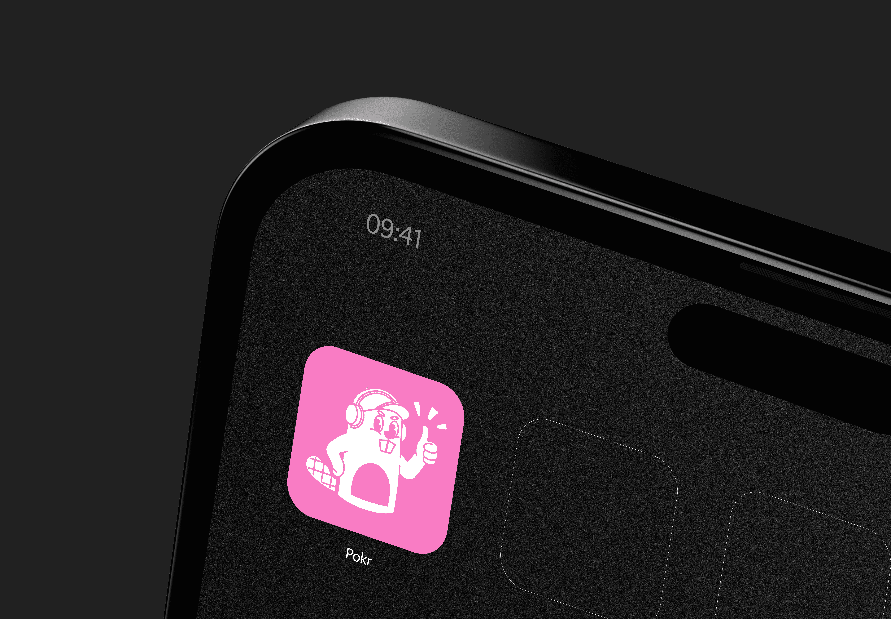
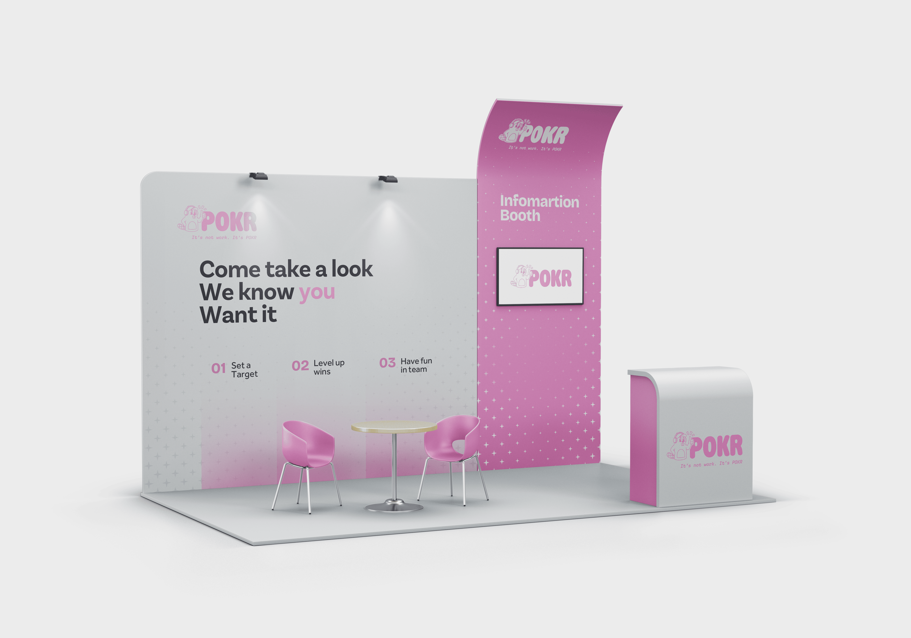
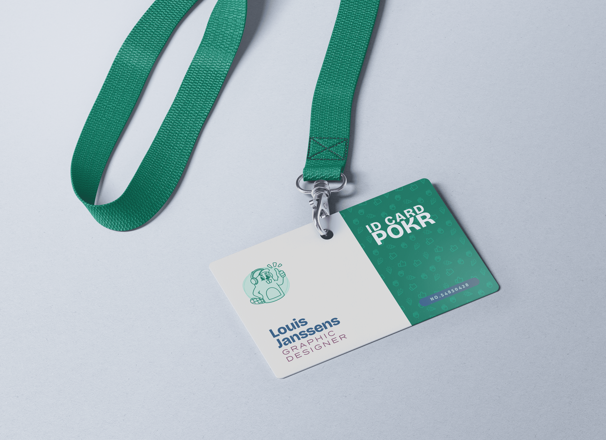
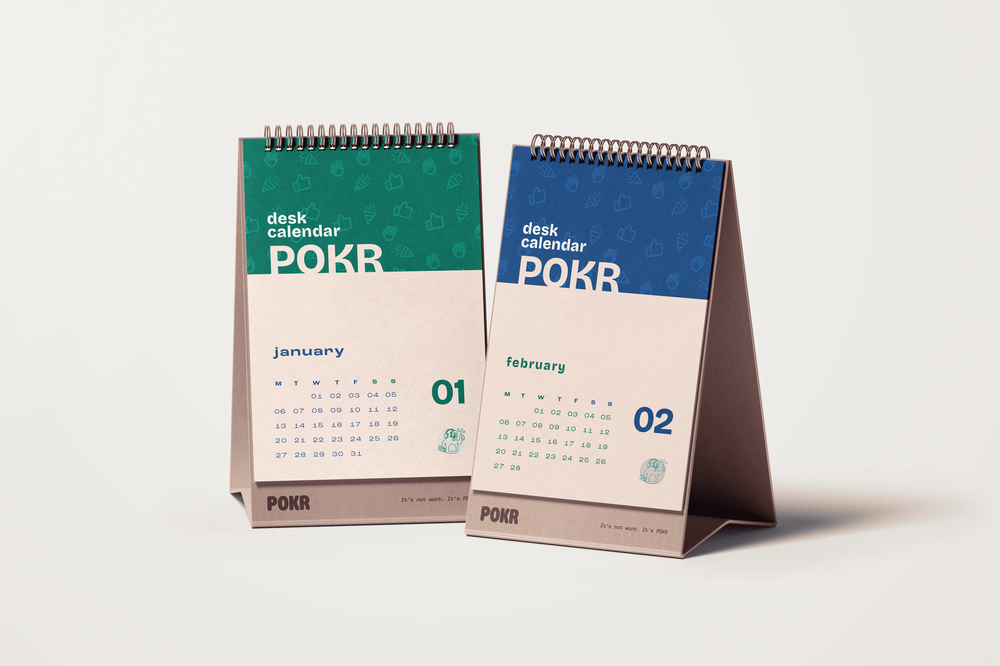
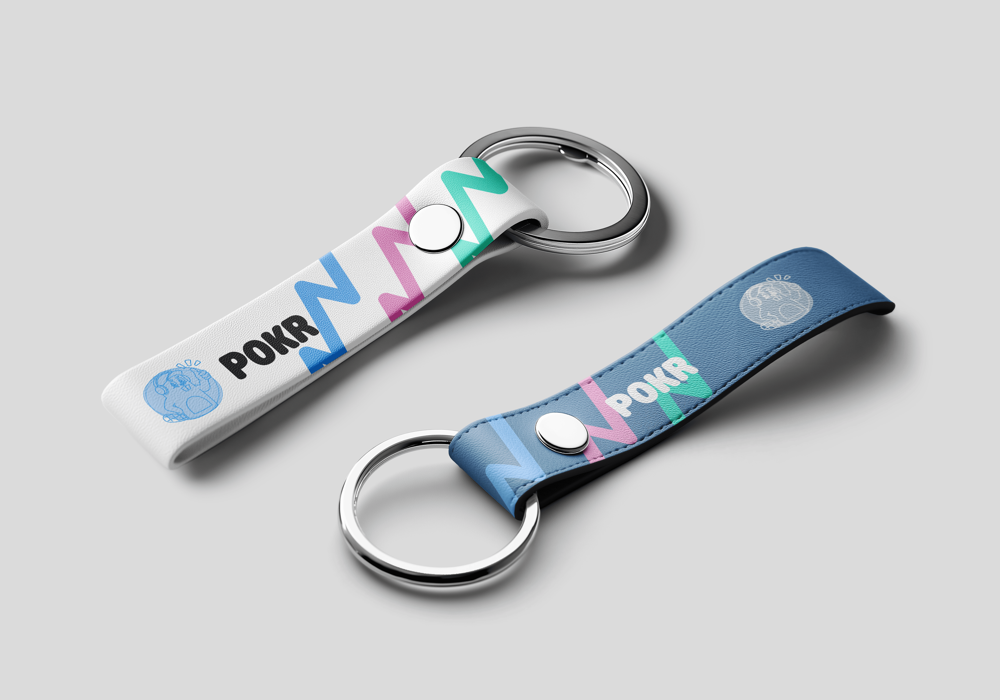
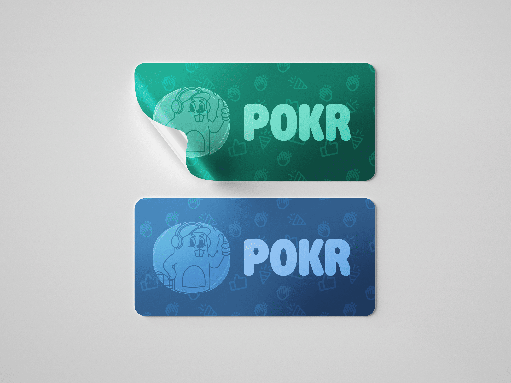
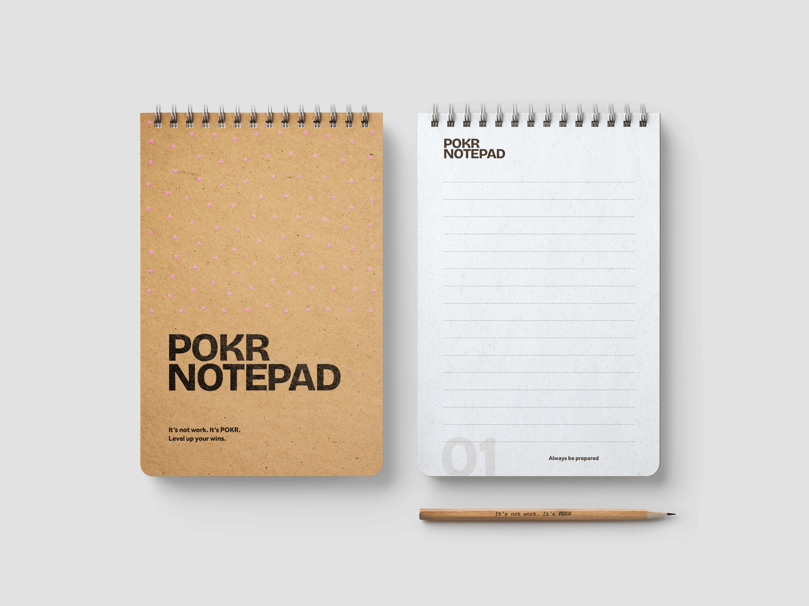

Project
App Design & Mockups
Tool
Figma & Illustrator
Doelgroep
Kleine KMO-teams
Focus
Gamification
01 — Concept & UX
Doelen verankeren zonder KPI-stress.
Pokr is een mobile-first appconcept ontworpen voor kleine KMO-teams. Het pakt het probleem aan dat doelen vaak in onoverzichtelijke lijsten verdwijnen. Onze visie was om een werk-tool te maken die aanvoelt als een social app of game.
Binnen het team ontwierp ik de UX/UI met de belofte: "Alles in maximaal 3 kliks." Door zachte kleuren, ronde vormen en 'card-design' profielen in plaats van saaie tabellen te gebruiken, creëerden we een positieve team-omgeving.
02 — Interactief Prototype
Test de app zelf uit.
Hieronder kan je direct door het werkende prototype klikken. Ervaar de check-in flow, bekijk het teamoverzicht en zie hoe de gamification-mascotte je beloont na een afgeronde actie.
03 — Branding & Mockups
Een merk dat fysiek tot leven komt.
Naast de applicatie was ik verantwoordelijk voor de visuele merkuitoefening en promotiematerialen rondom de campagne "It's not work. It's POKR.". Om het product op beurzen en in het straatbeeld overtuigend te pitchen, vertaalde ik het digitale merk naar tastbare fysieke dragers.









04 — Het Volledige Verhaal
De finale eindpitch.
Benieuwd naar het volledige proces, de go-to-market strategie en de visuele keuzes achter dit project? Bekijk de volledige pitch presentatie die we hebben samengesteld voor de eindjury.